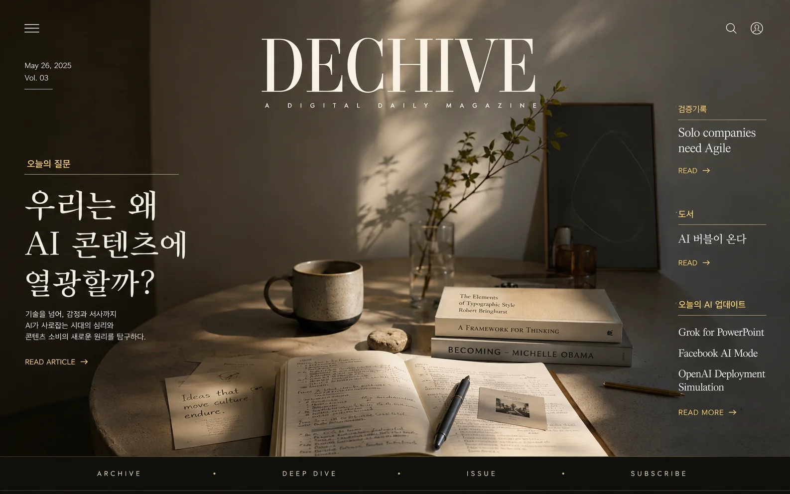
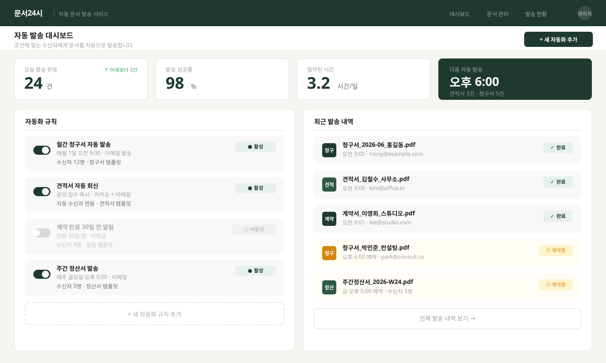

홈페이지 제작
방문자가 처음 봤을 때 "이게 뭐 하는 곳인지" 바로 이해하고 문의할 수 있는 1페이지 사업 소개 페이지를 설계합니다.
홈페이지 · 자동화 · 맞춤 강의
막연하게 무언가가 필요하다는 건 알지만, 정확히 뭔지 모를 때.
Dechive Studio는 지금 당신에게 실제로 필요한 것이 무엇인지 먼저
찾고,
홈페이지 제작·업무 자동화·맞춤 강의로 함께 만들어갑니다.
서비스
홈페이지든, 자동화든, 강의든 — 시작은 항상 같습니다.
지금 이 사람에게 실제로 무엇이 필요한지 먼저 찾는 것.
방문자가 처음 봤을 때 "이게 뭐 하는 곳인지" 바로 이해하고 문의할 수 있는 1페이지 사업 소개 페이지를 설계합니다.
"자동화 해드릴게요"가 아닙니다. 어떤 반복 업무가 시간을 가장 많이 잡아먹는지 먼저 찾고, 실제로 쓸 수 있는 방법을 설계합니다.
단순 커리큘럼이 아닙니다. 지금 이 사람에게 필요한 것이 무엇인지 먼저 파악하고, 수업마다 그에 맞게 설계합니다.
왜 Dechive Studio인가요?
AI 도구를 다룬다고 해서 바로 좋은 홈페이지가 만들어지는 것은 아닙니다.
Dechive Studio는 프로젝트 관리와 Agile, Google 프롬프팅 학습, 실제 제작 경험을 바탕으로 사업 소개 페이지의 구조를 함께 설계합니다.
방문자가 무엇을 이해해야 하는지, 어떤 흐름에서 신뢰를
느끼는지,
어디에서 문의로 이어져야 하는지를 먼저 정리합니다.
그래서 단순히 예쁜 페이지가 아니라, 만든 사람이 계속 사용할 수
있는 페이지를 목표로 합니다.
프로젝트 관리, Agile, Google 프롬프팅 학습을 실제 제작에 연결합니다.
이론이 아닌 실제 사이트 설계 및 제작 경험을 바탕으로 합니다.
단순 제작이 아닌 목표와 구조를 먼저 정리하는 방식으로 접근합니다.
AI를 활용하더라도 최종 구조, 문구, 흐름은 사람이 검토하고 정리합니다.
방문자가 자연스럽게 문의로 이어질 수 있는 구조를 함께 만듭니다.
작업 방식
필요한 내용과 목표를 함께 정리합니다.
방문자가 이해해야 할 메시지와 섹션 흐름을 설계합니다.
디자인과 카피 초안을 제작합니다.
피드백을 반영해 수정 후 최종 전달합니다.
대상
강의와 경력을 효과적으로 보여주고 수강 문의를 늘리고 싶으신 분
우리 가게와 서비스의 강점을 쉽고 명확하게 전달하고 싶으신 분
포트폴리오와 서비스를 정리해 신뢰도를 높이고 싶으신 분
작업 예시
실제 작업물이 추가되면 이미지와 링크로 교체됩니다.

콘텐츠 구조와 레이아웃을 중심으로 설계한 디지털 매거진 사이트입니다.

청구서·견적서·계약서를 조건에 맞게 자동으로 발송하는 업무 자동화 설계 샘플입니다.
FAQ
간단한 사업 소개와 문의 유도 페이지라면 충분합니다. 복잡한 회원가입, 결제, 관리자 기능이 필요한 경우에는 별도 서비스 구조를 제안합니다.
아닙니다. AI를 활용하더라도 최종 구조, 문구, 흐름은 사람이 검토하고 정리합니다.
강사, 작은 사업자, 프리랜서처럼 자신이 하는 일을 명확하게 소개하고 문의를 받고 싶은 분들에게 적합합니다.
현재 하는 일, 제공하는 서비스, 연락 방법, 참고하고 싶은 사이트 정도만 있어도 시작할 수 있습니다.
정해진 도구나 방법이 없습니다. 먼저 어떤 반복 업무에 시간이 가장 많이 들어가는지 함께 파악합니다. 그 다음, Notion · Google Sheets · Make · ChatGPT 등을 상황에 맞게 조합해 실제로 쓸 수 있는 방법을 설계합니다. "자동화를 해드릴게요"보다 "지금 이게 자동화가 되면 얼마나 달라지는지"를 먼저 보는 방식입니다.
정해진 커리큘럼이 없습니다. 같은 주제라도 대상이 달라지면 내용이 달라집니다. 지금 이 사람이 실제로 막히는 지점, 당장 써먹을 수 있는 것이 무엇인지를 먼저 파악하고 수업을 설계합니다. 일반론적인 강의가 아니라, 수업이 끝나고 나서 바로 적용할 수 있는 것을 목표로 합니다.
문의
홈페이지인지, 자동화인지, 강의인지 — 그것부터 함께 찾는 것이 첫 번째 작업입니다.